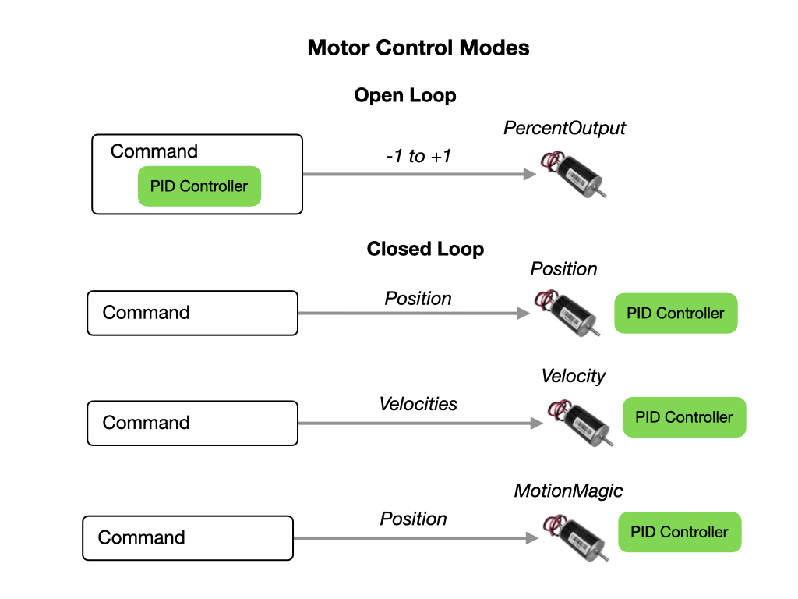
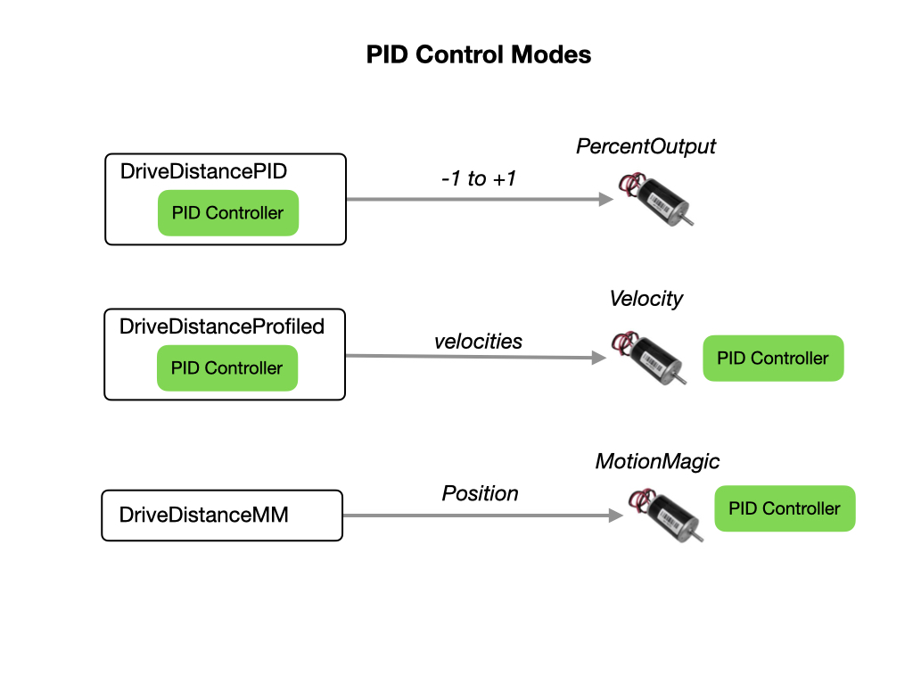

Actuators
Most of the actuators that are used for our competition robot are supplied by Cross The Road Electronics CTRE. These mainly include the Kraken for the drivetrain. And the TalonFX for onboard mechanisms. Before using any of this hardware we need to install the additional 3rd-Party Phoenix software.
Loop Control Modes
Loop Control Modes documentation.


TalonFX
Documentation for the TalonFX
References
FRC Documentation Motor Controllers
FRC Documentation - Pneumatics
CTRE Documentation
CTRE Examples
CTRE Phoenix Tuner